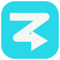

01 —
Ideias sem lugar
Você pensa no próximo vídeo, mas as ideias ficam perdidas entre anotações, arquivos e conversas.
DA IDEIA À ORGANIZAÇÃO
ZAMAI FLOWUma forma mais leve de organizar e programar seus Reels. Planeje suas publicações em um só lugar e deixe sua rotina de conteúdo fluir.
Quando cada etapa fica espalhada, manter a constância pesa. O Zamai Flow nasce para deixar sua rotina de publicações mais clara e no seu controle.
Você pensa no próximo vídeo, mas as ideias ficam perdidas entre anotações, arquivos e conversas.
DA IDEIA À ORGANIZAÇÃOPublicar sempre em cima da hora torna difícil manter o ritmo que você gostaria de ter.
DO IMPROVISO AO SEU RITMOSem enxergar o que vem pela frente, planejar a semana e acompanhar a fila vira mais uma tarefa.
DA DÚVIDA À VISÃO CLARAMais espaço para criar. Mais clareza para seguir.
Organize as etapas do seu conteúdo em um só lugar e acompanhe o que vem a seguir.
Reúna os Reels que você quer publicar e mantenha sua fila organizada.
01 02Defina a data e o horário para planejar suas próximas publicações.
02 03Veja o que está na fila e acompanhe o andamento pelo painel.
SEU RITMO SEU FLOWUma visão prática para organizar sua rotina de Reels sem transformar planejamento em mais uma complicação.
Visualize seus vídeos pendentes e publicados para manter o planejamento mais claro.
Guarde vídeos para encontrar e preparar suas próximas publicações.
Programe os horários e acompanhe a fila em uma visão simples.
Tenha uma visão geral da fila, dos próximos horários e dos vídeos que já estão organizados — tudo em uma experiência feita para acompanhar seu ritmo.
Quero conhecer →Estamos preparando novos caminhos para o seu conteúdo.
O Zamai Flow está em fase de testes. Aqui estão algumas respostas para você saber o que esperar.
É um sistema para organizar vídeos, planejar publicações de Reels e acompanhar sua fila em um só painel.
O sistema está em fase de testes. A disponibilidade de acesso pode variar durante esse período.
Nesta etapa, a proposta é organizar e publicar Reels no Instagram. A integração com TikTok está marcada como “Em breve” e ainda não está disponível.
Os preços ainda não foram definidos. Planos em breve — nenhum pagamento está sendo solicitado por esta landing page.
O sistema está em testes e os recursos podem depender da configuração da conta e da integração com a plataforma. A landing page não conecta nem agenda publicações.
Organize suas ideias e deixe espaço para criar. O Zamai Flow está em fase de testes — acompanhe as novidades.